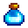

Heavy Tapper
| Heavy Tapper | |
| Place on a maple, oak, or pine tree and wait for the reservoir to fill with product! Works twice as fast as a normal tapper. | |
| Information | |
| Source | Crafting |
| Season | |
| Sell Price | Cannot be sold |
| Crafting | |
| Recipe Source | Qi's Secret Walnut Room for |
| Ingredients | |
The Heavy Tapper is a crafted item that works at twice the production rate of a regular Tapper. The recipe can be purchased in Mr. Qi's Secret Walnut Room on Ginger Island for  20. It can be placed on a tree to produce Maple Syrup, Oak Resin, Pine Tar, Mystic Syrup, or Sap. It can also be placed on a Mushroom Tree to produce different mushrooms, but the production rate is not increased compared to a regular Tapper. It can be placed on a Fern Green Rain Tree to produce Fiddlehead Ferns. Other types of Green Rain Tree cannot be tapped.
20. It can be placed on a tree to produce Maple Syrup, Oak Resin, Pine Tar, Mystic Syrup, or Sap. It can also be placed on a Mushroom Tree to produce different mushrooms, but the production rate is not increased compared to a regular Tapper. It can be placed on a Fern Green Rain Tree to produce Fiddlehead Ferns. Other types of Green Rain Tree cannot be tapped.
The Heavy Tapper can be removed from a tree by hitting it once with an axe or pickaxe. This leaves the Tapper intact and able to be reused. If the Heavy Tapper is on a tree when it is struck by lightning, both the Tapper and its contents are destroyed.
Heavy Tappers placed on Maple Trees, Oak Trees, Pine Trees, Mahogany Trees, or Mystic Trees continue to produce during Winter. Since Mushroom Trees and Fern Green Rain Trees turn to stumps in Winter, any tappers placed on them produce nothing during that season.
Note that there is no difference between a Tapper and a Heavy Tapper placed on a Mahogany Tree, since Heavy Tappers only affect production time, and the minimum production time for a tapper is 1 night.[1]
Products
| Image | Name | Description | Source | Time[1] | Sell Price | Energy / Health |
|---|---|---|---|---|---|---|
| Maple Syrup | A sweet syrup with a unique flavor. | Maple Tree | ||||
| Oak Resin | A sticky, fragrant substance derived from oak sap. | Oak Tree | Inedible | |||
| Pine Tar | A pungent substance derived from pine sap. | Pine Tree | Inedible | |||
| 3 - 8 Sap | A fluid obtained from trees. | Mahogany Tree | ||||
| Common Mushroom | Slightly nutty, with good texture. | Mushroom Tree | ||||
| Red Mushroom | A spotted mushroom sometimes found in caves. | Mushroom Tree | ||||
| Purple Mushroom | A rare mushroom found deep in caves. | Mushroom Tree | ||||
|  | Mystic Syrup | A very rare syrup that is said to have magic properties. | Mystic Tree | |||
| Fiddlehead Fern | The young shoots are an edible specialty. | Fern Green Rain Tree |
Types
| Image | Name | Description | Ingredients | Recipe Source |
|---|---|---|---|---|
| Tapper | Place on a maple, oak, or pine tree and wait for the reservoir to fill with product! | |||
| Heavy Tapper | Place on a maple, oak, or pine tree and wait for the reservoir to fill with product! Works twice as fast as a normal tapper. | Qi's Walnut Room for |
Bugs
- Common trees tapped with a Heavy Tapper instead of a regular Tapper can turn into Mushroom Trees in Fall.
- Oak Trees and Maple Trees tapped with a Heavy Tapper instead of a regular Tapper can turn into Green Rain Trees in Fall, whereas this should only have a chance to happen to trees that do not contain any tapper.
References
History
- 1.5: Introduced.
- 1.6: Mystic Syrup and Fiddlehead Fern now possible products.